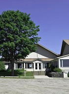
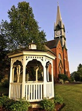
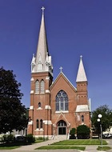

The Sacraments of Baptism and Marriage require preparation before celebration. Please call the rectory for specific information and appointments. Marriage requires at least six months notice.
For information about other parishes around the state visit the Diocese of Burlington web site.
Also be sure to visit the Good Shepherd School website.
Please see the Weekly Bulletin for the daily Mass schedule.
You now can give online through WeShare, an easy and convenient way to save time and support our parish. Donating is simple, safe and secure.
With WeShare, you can set up a recurring weekly or monthly transaction using your checking, savings, or credit card account. you can decide how much to give to any collection and make changes any time, day or night.
Please view/download the weekly bulletin to keep apprised of our current goings on.
We are proud of our religious education program, which includes Lifeteen for our High School age members. Inquiry classes allow those who want to learn more about the Catholic Church to do so in a relaxed group setting. We boast of several woman's groups and two Knights of Columbus Councils, the Sheridan Council and the St. Elizabeth Council.
One of our churches is bound to be in a convenient location for you, and serve your faith, whether you're a resident or a visitor, and all are welcoming to new parishioners and travelers alike.
The history of our parish is quite involved, at one time there were two parishes in St. Johnsbury alone. Queen of Peace parish had been joined with the parish in Marshfield. As of June 2011 we have become a single parish, christened Corpus Christi Parish with St. John the Evangelist, St. Elizabeth in Lyndonville, and Our Lady Queen of Peace in Danville making up the parish. St. Leo's in Lunenburg is also part of our parish community, though Mass is not celebrated there, however a church Finance/Council committee remains , and a devotional service is held every Wednesday evening.
St. John the Evangelist, St. Elizabeth, and Queen of Peace all maintain church buildings, with regularly scheduled Masses. We now have a combined parish Council, and Finance Committee under the auspices of Corpus Christi Parish. Each church has their own unique fund-raisers and social events.
We have combined all administrative and clerical services. Susan Maurice is the parish secretary for the entire group, and we have one bulletin — which can be viewed in your browser or downloaded for your perusal — which serves our parish community.
We welcome you to our site. Please look around and see what's happening in our wonderful community. Be sure to take note of the weekend Mass schedule noted in the previous section, and the weekday Mass schedule, located in the download-able weekly bulletin. We would love to have you worship with us.
A very informative pamphlet on the value and blessings of Eucharistic Adoration in general, and the Holy Hour. Please read Value of Sacrifice: The Eucharist & Adoration.
This document lays out the steps in the process, the documents required, fees, information for couples that do not live in Vermont and an application form. This document can be view/downloaded here.
View or download the calendar of events for the month of May so you can plan your parish activities.
View the Daily Mass readings for 2019.
Prayer requests for Priests, for the months of December and January.
Information packet for the Vermont Advanced Directive which is a legal document written in advance of a serious illness or injury to address your end-of-life medical care and/or your medical care in the event you are temporarily unable to speak for yourself.
Please pray this prayer for life, daily. And join us every second Sunday of the month at 3:00 PM for a Holy Hour at either St. John's or St. Elizabeth's.

On Rte. 2, one quarter of a mile East of the village center.

Directions for St. Elizabeth's involve small side, and one way streets and would be difficult to explain in text form. Better to view the map.

Take exit 22 off I-91. From there it’s 1m to a lighted intersection where you will take a right onto Rte. 5 South. If you were already on Rte. 5 South this intersection has a Kinney drug store, Sunoco gas station, and a Price Chopper super market clustered around it. From this intersection proceed South 1.2m to a lighted Y intersection where you will bear right up Alt. Rte. 5. In 6 tenths of a mile St. John’s will be a red brick church on your right.
Take exit 21 off I-91 onto Rte. 2 East. Stay on this road into town for 1.4m where you will come to a T intersection. The Post Office will be on your left. You will be going straight through the intersection, crossing the top of the T. Proceed 2 tenths of a mile. St. John’s will be a red brick church on your left.
Take exit 20 off I-91 onto Rte. 5 North. Go 9 tenths of a mile and stop at a non-lighted four way intersection. Go straight through this intersection for 1 tenth of a mile and stop at non-lighted three way intersection. There will be a Dunkin Donuts on your left. Go straight through this intersection and in only about 75 yards get into the left turn lane - you will be next to a Rite Aid Drug store - turn left up Maple St. Proceed up Maple St. noting the Good Shepherd Catholic School which will be a yellow brick building on your left, at the top of the hill in 2 tenths of a mile stop at the T intersection. Across the street in front of you is the parking lot for St. John’s which is the red brick church to the left of it.
Take exit 1 off I-93 onto Rte. 18 North. In ½ m you will come to a T intersection which will also be the junction of Rte’s 18 and 2. Turn left onto Rte. 2 West. Proceed 2.3 m to a lighted intersection. Go straight through this intersection and proceed 6 tenths of a mile to (you will be crossing a bridge just before) a non-lighted 3 way intersection. Be sure to get in the right turn lane. At this intersection you should see a Shell station on your right and a Dunkin Donuts in front of you. Turn right and go only about 75 yards making sure to get in the left turn lane - you will be next to a Rite Aid Drug store- and turn left onto Maple St. Proceed up Maple St. noting the Good Shepherd Catholic School which will be a yellow brick building on your left, at the top of the hill in 2 tenths of a mile stop at the T intersection. Across the street in front of you is the parking lot for St. John’s which is the red brick church to the left of it.